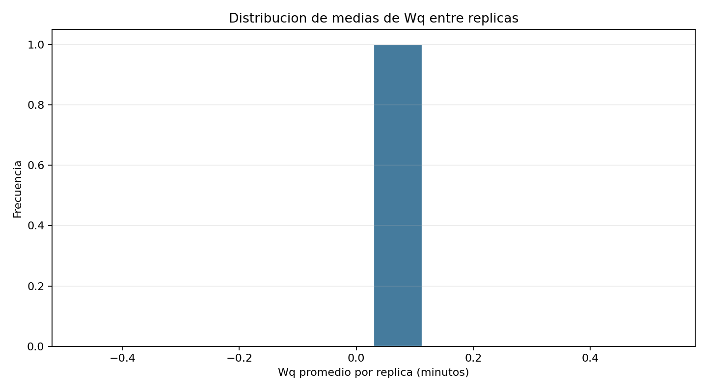

Proyecto desplegado en Render. Esta vista publica muestra los resultados y graficas generadas por la simulacion.




Modelo M/M/c para analizar llegada de clientes, capacidad de tecnicos, tiempos de espera y escenarios de sensibilidad.
